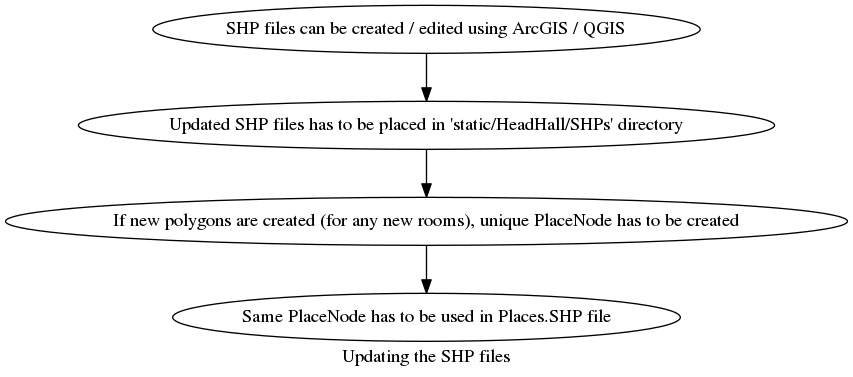
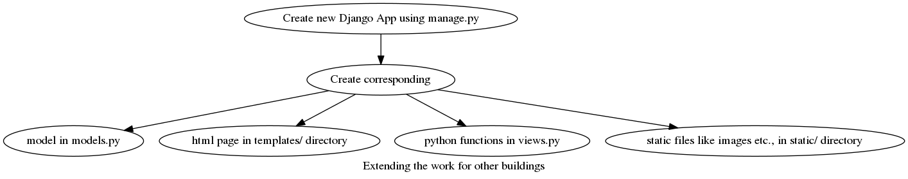

Extending the work
Updating the Data
Data can be updated directly using the Admin Page.
Just need the proper credentials.
Updating the ShapeFiles

Extending for other buildings in UNB

The existing code can be used but variables / files must be changed
accordingly.